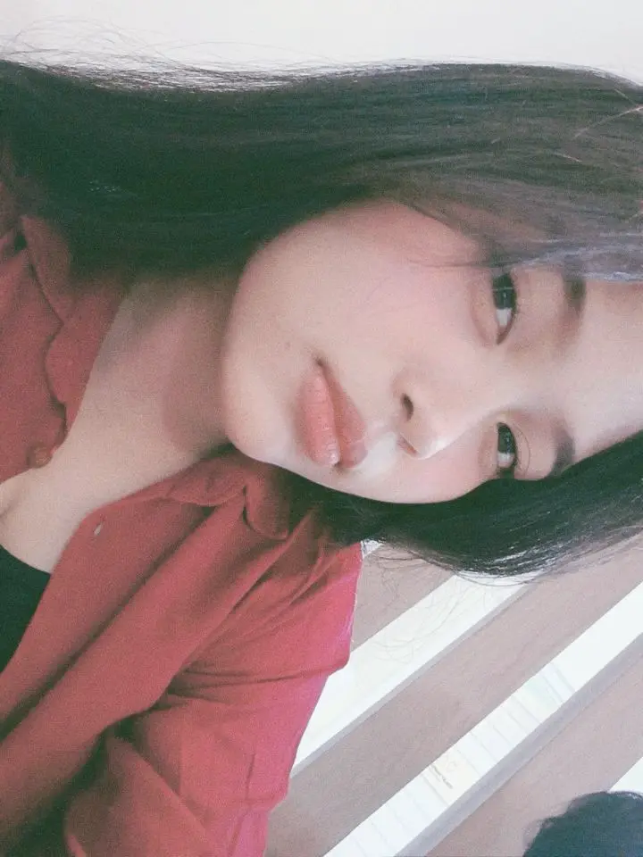

Siswa SMK NU 1 Ajibarang
Teknik Komputer dan Jaringan (TKJ)
Instagram @finesyilitchHalo! Saya Faizhar Rakhma Izzati, siswa SMK NU 1 Ajibarang jurusan Teknik Komputer dan Jaringan (TKJ). Saya suka mencari tahu dan mempelajari dunia teknologi. Hobi saya adalah berenang dan saya memiliki cita-cita menjadi pengusaha yang sukses.
Instagram : @finesyilitch
Sekolah : SMK NU 1 Ajibarang